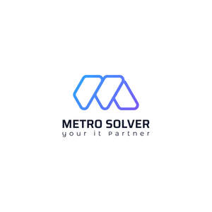

Trade Mark Journal No.2025/042 17 October 2025
UK00004274736 8 October 2025 (9,35,42)

- Class 9
- Point Of Sale [POS] systems; Graduated rulers; Engine hour meters; Vests (Am.) Bullet-proof ; Three dimensional viewers; System on a Chip [SoC]; System on Chip [SOC]; Science sets for children being teaching apparatus; Math coprocessor; Downloadable software; Downloadable video files; Downloadable videos; Downloadable game software; Ringtones [downloadable]; Downloadable ringtones; Downloadable music files; Downloadable videocasts; Downloadable video game software; Downloadable e-books; Downloadable podcasts; Downloadable electronic games; Downloadable image files; Downloadable e-wallets; Downloadable movies; Downloadable email software; Software downloadable from the internet; Downloadable application software; Downloadable game related software applications; Downloadable applications; Downloadable software applications; Downloadable computer game software; Computer game software, downloadable; Downloadable electronic game programs; Downloadable electronic maps; Downloadable computer games; Downloadable video game programs; Downloadable computer software; Downloadable interactive entertainment software for playing video games; Downloadable computer graphics; Downloadable video recordings; Downloadable animated cartoons; Downloadable mobile applications; Downloadable software in the nature of a mobile application for playing games; Downloadable mobile coupons; Downloadable computer game programs; Downloadable instant messaging software; Downloadable software, namely virtual bags; Downloadable publications; Computer software platforms, recorded or downloadable; Downloadable interactive entertainment software for playing computer games; Downloadable digital music files authenticated by non-fungible tokens [NFTs]; Downloadable computer software applications; Downloadable application software for virtual environments; Publications in electronic format [downloadable]; Computer software applications, downloadable; Downloadable electronic newsletters; Downloadable electronic books; Downloadable software in the nature of a mobile application; Digital music downloadable provided from MP3 internet web sites; Downloadable digital music provided from MP3 Internet web sites; Digital music downloadable provided from MP3 internet websites; Downloadable electronic reports; Downloadable computer software applications for minting non-fungible tokens [NFTs]; Downloadable virtual headwear; Computer software downloadable from the internet; Programs (Computer -) [downloadable software]; Computer programs [downloadable software]; Downloadable graphics for mobile phones; Downloadable video recordings featuring music; Downloadable postcards; Downloadable digital image files authenticated by non-fungible tokens (NFTs); Downloadable computer programs; Computer programs, downloadable; Downloadable films; Interactive game software; Electronic downloadable publications in the field of video games; Downloadable posters; Downloadable computer utility software; Interactive video software; Downloadable virtual handbags; Smartphone software applications, downloadable; Electronic publications, downloadable; Publications (Electronic -), downloadable; Downloadable electronic publications; Electronic publications (downloadable); Downloadable electronic game software for wireless devices; Downloadable graphics for mobile telephones; Downloadable software applications for mobile phones; Downloadable digital music; Downloadable software, namely virtual currency; Digital music [downloadable] provided from mp3 web sites on the internet; Downloadable electronic brochures; Downloadable software, namely virtual clothing for use in computer games; Interactive software; Downloadable ringtones for mobile phones; Downloadable software, namely virtual clothing; Downloadable series of children’s books; Software as a medical device [SaMD], downloadable; Downloadable software applications for use with three dimensional printers; Downloadable virtual footwear; Computer screen saver software, recorded or downloadable; Downloadable application software for smart phones; Downloadable digital photos; Computer game software for use with on-line interactive games; Downloadable computer software for designing and modelling of three dimensional printable products; Downloadable virtual luggage; Downloadable computer software for use as a digital wallet; Downloadable computer software for use as an electronic wallet; Freeware; Electronic publications, downloadable, relating to games and gaming; Downloadable computer software for the transmission of information; Digital music downloadable provided from the internet; Downloadable information relating to games and gaming; Downloadable computer software for use as an application programming interface (API); Digital books downloadable from the Internet; Downloadable printing fonts; Downloadable emoticons for mobile phones; Downloadable virtual clothing; Downloadable smart phone application software; Educational software featuring instructions for playing games; Downloadable smart phone applications (software); Digital music downloadable provided from a computer database or the internet; Electronic sheet music, downloadable; Downloadable electronic newspapers; Downloadable sound recordings; Downloadable computer software for the transmission of data; Downloadable applications for use with mobile devices; Downloadable applications for mobile devices; Digital music downloadable from the Internet; Data sets, recorded or downloadable; Downloadable publications in electronic form; Downloadable comic strips; Downloadable wallpapers for computers and phones; Downloadable computer utility programs; Downloadable computer security software; Downloadable mobile applications for the transmission of information; Downloadable digital assets; Website development software; Web site development software; Web development software; Software for product development; Mobile application software; Application software for mobile phones; Mobile apps; Mobile software; Software for mobile device management; Mobile device management software; Application software for mobile devices; Downloadable software in the nature of a mobile application for food delivery and ordering; Educational mobile applications; Computer application software for mobile phones; Software for mobile phones; Downloadable mobile applications for the management of data; Computer software for mobile applications that enable interaction and interface between vehicles and mobile devices; Application development software; Downloadable software in the nature of a mobile application for dark kitchen delivery and ordering; Downloadable mobile applications for booking taxis; Computer application software for mobile telephones; Software applications for use with mobile devices; Software applications for mobile devices; Software and applications for mobile devices; Downloadable mobile applications for the management of information; Application software for social networking services via internet; Electronic game software for mobile phones; Mobile applications for booking taxis; Computer game software for use on mobile and cellular phones; Computer software for mobile phones; Interactive casino games provided through a computer or mobile platform; Application software for cloud computing services; Software for the planning, integration and optimisation of smart city applications; Downloadable mobile applications for the transmission of data; Electric mobile digital communication devices; Mobile phones; Downloadable mobile applications for use with wearable computer devices; Software for the planning, integration and optimization of Smart City applications; Application software for smart phones; Computer programs and software for image processing used for mobile phones; Computer game software for use on mobile devices; Game development software; Computer software programs; Simulation software for use in digital computers; Computer games programs [software]; Computer software for processing digital music files; Computer programming software; Computer software for processing digital images; Computer software [programmes]; Computer software for advertising; Computer programs for processing digital music files; Computer software programs for database management; Computer software programs for spreadsheet management; Computer software for education; Educational computer software; Computer software; Computer software for the display of digital media; Computer software downloadable from global computer networks; Video games programs [computer software]; Computer software platforms; Computer e-commerce software; Interactive computer software; Downloadable computer software for the management of data; Computer software downloadable from global computer information networks; Computer games programmes [software]; Computer software for computer aided software engineering; Downloadable computer software for blockchain technology; Communications processing computer software; Computer graphics software; Computer software for the monitoring of computer systems; Computer software development tools; Computer software applications; Computer programs; Network management computer software; Computer telephony software; Computer software packages; Computer software for use in programming facsimile machines; Computer game software downloadable from a global computer network; Computer games software; Computer games programs downloaded via the internet [software]; Computer software for entertainment; Computer hardware for use in computer-assisted software engineering; Computer software for encryption; Computer gaming software; Computer software for accessing computer networks; Computer programs for printing; Computer software for database management; Computer programs for video and computer games; Digital telephone platforms and software; Downloadable computer software for the management of information; Computer interface software; Computer application software; Computer application software for TV; Software for computers; Computer antivirus software; Computer programs for network management; Computer software for the administration of on-line games and gaming; Computer software for the detection of threats to computer networks; Downloadable computer game software via a global computer network and wireless devices; Interactive multimedia computer programs; Computer software for testing vulnerability in computers and computer networks; Computer software for document management; Digital dashboard software; Computer operating software; Computer software for the creation of firewalls.
- Class 35
- Provision of an online marketplace for buyers and sellers of downloadable digital image files authenticated by non-fungible tokens [NFTs]; Advertising services; Advertising and advertisement services; Advertising and marketing services; Advertising and promotion services; Advertising agency services; Advertising and promotional services; Promotional and advertising services; Promotional advertising services; Advertising, marketing and promotion services; Marketing, advertising and promotion services; On-line advertising and marketing services; Advertising, marketing and promotional services; Advertising, promotional and marketing services; Marketing, advertising, and promotional services; Online advertising services; Advertising and publicity services; Advertising services of a radio and television advertising agency; Advertising services for the promotion of e-commerce; Digital advertising services; Services of advertising agencies; Press advertising services; Advertising research services; Advertising services provided by a radio and television advertising agency; Providing advertising services; Advertising services for the promotion of beverages; Graphic advertising services; Political advertising services; Advertising, promotional and public relations services; Modeling services for advertising or sales promotion; Advertising; Customer loyalty services for commercial, promotional and/or advertising purposes; Planning services for advertising; Brand creation services (advertising and promotion); Advertising, marketing and promotional consultancy, advisory and assistance services; Classified advertising services; Advertising services for the literary industry; Direct mail advertising services; Customer club services, for commercial, promotional and/or advertising purposes; Marketing services; Marketing agency services; Organisation of customer loyalty programs for commercial, promotional or advertising purposes; Advertising and marketing services provided via communications channels; Advertising particularly services for the promotion of goods; Announcement services for advertising purposes; Consultancy services relating to advertising, publicity and marketing; Research services relating to advertising and marketing; Advertising and marketing; Consultancy relating to advertising and promotion services; Promotion [advertising] of business; Advertising services provided for florists; Modelling agency services for advertising purposes; Advertising services for architects; Advertising and promotion services and related consulting; Business advertising services relating to franchising; Advertising text publication services; Advertising and marketing services provided by means of social media; Advertising and marketing services provided by means of blogging; Rental of advertising space on the Internet for employment advertising; Advisory services relating to advertising; Advertising services relating to the provision of business; Layout services for advertising purposes; Advertising services provided by television; Advertising services provided over the internet; Advertising services relating to newspapers; Advertising and marketing consultancy; Advertising services relating to financial services; Modelling agency services relating to advertising; Business marketing services; Promotion, advertising and marketing of on-line websites; Advertising services provided via the internet; Online advertising network matching services for connecting advertisers to websites; Advertising services to promote the sale of beverages; Intermediary services relating to advertising; Advertising services relating to hotels; Advertising copywriting; Direct marketing services; Advertising services relating to the recruitment of personnel; Advertising services relating to public works; Research services relating to advertising; Provision of computerised advertising services; Recruitment advertising; Business promotion services; Advertising agencies; Advertising services relating to clothing; Advertising services relating to the motor vehicle industry; Provision of space on websites for advertising goods and services; Advertising services relating to perfumery; Intermediary services relating to the rental of advertising time and space; Online advertising; Advertising services relating to the travel industries; Advertising services relating to jewelry; Advertising services relating to cosmetics; Promotional services; Sales promotion services; Telephone marketing services [not selling]; Marketing advisory services; Copywriting for advertising and promotional purposes; Advertising services relating to pharmaceutical products; Promotion [advertising] of travel; Advertising services provided for others; Advertisement and publicity services by television, radio, mail; Business marketing consultation services; Publicity and sales promotion services; Publicity agency services; Promotional marketing services using audiovisual media; On-line advertising; Marketing consultation services; Recruitment services for sales and marketing personnel; Window dressing services for advertising purposes; Business marketing consulting services; Advertising consultation; Provision of space on web-sites for advertising goods and services; Promotion services; Web indexing for commercial or advertising purposes; Marketing research services; Advertising services to create corporate and brand identity; Advertising services relating to pharmaceuticals; Business merchandising display services; Modeling for advertising or sales promotion; Consulting services in the field of Internet marketing; Modelling for advertising or sales promotion; Publicity and promotional services; Radio advertising; Mail-order advertising; Advertising of business web sites; Arrangement of advertising; Mediation of advertising; Information services relating to advertising; Personnel recruitment advertising; Providing user rankings for commercial or advertising purposes; Advertising services relating to the sale of goods; Commercial information agency services; Advertising services relating to motor cars; Business advisory services relating to product development; Business consultancy services relating to product development; Business strategy development services; Marketing services in the field of web site traffic optimization; Providing business information via a web site; Creative marketing plan development services; Business management services relating to the development of businesses; Online community management services; Business management consultancy services provided via the Internet; Business management for freelance service providers; Business project management services; Business advisory services relating to company performance; Brand evaluation services; Consulting services in the field of development of advertising concepts; Business advisory services relating to product manufacturing; Business research services; Advisory services and information in business organization and management; Business information and research services; Business research and information services; Business information agency services; Product launch services; Advisory services relating to business organization; Business management and organization consultancy services; Research services relating to business; Brand creation services; Business management and consultation services; Advisory services relating to business organisation and management; Providing online commercial directory information services; Business introduction services; Providing business information via a website; Retail services in relation to mobile phones; Advertisement via mobile phone networks; Placement of design staff; Business consultation; Business merger consultation; Business consultation services; Taxation [accountancy] consultation; Business management and consultation; Business management consultation; Foreign trade information and consultation; Corporate image development consultation; Business organizational consultation; Business acquisitions consultation; Human resources consultation; Business consultation relating to advertising; Personnel management consultation; Professional business consultation relating to the setting up of businesses; Employment recruiting consultation; Employment staffing consultation services; Market segmentation consultation; Counselling on business matters; Professional business consultations; Tax consultations [accountancy]; On-line trading services in which seller posts products to be auctioned and bidding is done via the Internet; Business advice relating to marketing management consultations; Consultations relating to advertising; Appointment reminder services [office functions]; Consultation in the field of business acquisitions; Business advisory services to determine pay and grading structures by job evaluation; Professional business consultation relating to the operation of businesses; Consultations relating to business promotion; Consultations relating to business advertising; Consultations relating to business mergers; Cost assessment services; Advice on tax preparation; Conference call transcription services; Providing an on-line commercial information directory on the internet; Retail services for computer software; Promoting philanthropic services; Management assistance for promoting business; Brand strategy services; Brand positioning services; Advertising services to create brand identity for others; Advertising services to promote public awareness of the benefits of shopping locally; Advertising services to promote public awareness of social issues; Agency services for promoting sports personalities; Business consultancy services relating to the promotion of fund raising campaigns; Franchising services providing marketing assistance; Promoting the goods and services of others by means of a preferred customer program; Business consultancy services relating to the marketing of fund raising campaigns; Advertising services to promote public awareness in the field of social welfare; Developing promotional campaigns for business; Advertising services to promote public awareness of environmental matters; Advertising services to promote public awareness of environmental issues and initiatives; Advertising services to promote public awareness of medical issues; Promoting the goods and services of others; Promoting the goods and services of others through the administration of sales and promotional incentive schemes involving trading stamps; Providing business marketing information; Promoting the sale of goods and services of others through promotional events; Advisory services relating to sales promotion; Promoting the goods and services of others by arranging for sponsors to affiliate their goods and services with awards programs; Promoting the goods and services of others by arranging for sponsors to affiliate their goods and services with sporting activities; Consulting services relating to marketing; Promoting the goods and services of others by arranging for sponsors to affiliate their goods and services with sports competitions; Consultancy relating to the organisation of promotional campaigns for business; Franchising services providing business assistance; Modelling agency services for sales promotion purposes; Business consultancy services relating to management of fund raising campaigns; Advertising services relating to the commercialization of new products; Promotion of goods and services through sponsorship; Business intermediary and advisory services in the field of selling products and rendering services; Promoting the goods and services of others by means of a loyalty rewards card scheme; Advertising services to promote public awareness of medical conditions; Sales promotion through customer loyalty programs; Promoting the goods and services of others through infomercials; Advisory services relating to marketing; Business strategy services; Export promotion services; Providing assistance in the field of business promotion; Business promotion; Services with regard to product presentation to the public; Promoting the goods and services of others by distributing coupons; Business management advisory services relating to franchising; Providing marketing consulting in the field of social media; Promoting the goods and services of others through discount card programs; Providing business intelligence services; Business promotion services provided by audio/visual means; Consultancy relating to business advertising; Business promotion services provided by telephone; Promoting the goods and services of others through the distribution of discount cards; Developing promotional campaigns for businesses; Market research services regarding customer loyalty; Business promotion services provided by telex; Franchising (Business advisory services relating to -); Business advisory services relating to franchising; Promoting the sale of goods and services of others through the distribution of printed material and promotional contests; Promoting the goods and services of others via a global computer network; Promoting the goods and services of others over the Internet.
- Class 42
- Application service provider services; Hosting electronic memory space on the Internet for advertising goods and services; Software as a service; Software as a service [SAAS] services; Website development services; Website design and development; Website design services; Design and development of software for website development; Rental of software for website development; Web site design and creation services; Database development services; Web site design services; Programming of software for website development; Webpage design services; Internet web site design services; Software development services; Website development for others; Research and development services; Website usability testing services; Website hosting services; Web page design services; Web site hosting services; Advisory services in the field of product development and quality improvement of software; Planning, design, development and maintenance of online websites for third parties; Web site design consultancy; Application service provider [ASP] services; Website design consultancy; Providing temporary use of on-line non-downloadable software for web site development; Advisory and consultancy services relating to the design and development of computer hardware; Advisory and information services relating to the design and development of computer hardware; Design and development of Internet security programs; Hosting services, software as a service, and rental of software; Website load testing services; Intranet design, development and maintenance; Research and development services in connection with physics; Product development consultation; Product design services; Video game development services; Website design; Consultancy relating to the design and development of computer database programs; Industrial development services; Database design and development; Web hosting services; Advisory and information services relating to the design and development of computer peripherals; Design and development of homepages and websites; Consulting services in the field of software as a service [SaaS]; Consultancy relating to software design and development; Consultancy and information services relating to the design, programming and maintenance of computer software; Development services relating to computer software application solutions; Development services in the field of computer software and advisory services relating thereto; Product design and development; Design and development of software for database management; Product development; Advice and development services relating to computer software; Research and development services relating to computer hardware; Building research services; Consultancy relating to the design and development of computer programs; Application service provider (ASP) services, namely, hosting computer software applications of others; Advisory services relating to building design; Development of application software for delivery of multimedia content; Product research and development; Information services relating to the development of computer networks; Pharmaceutical research and development services; Development services relating to computer programmes; Technical consultancy relating to product development; Building design services; Consultancy relating to the design and development of computer software programs; Web site design; Design services; Creation and maintenance of web sites; Design services relating to the creation of networks; Application service provider (ASP); Information services relating to the development of computer systems; Development services relating to computer systems; Consultancy and information services relating to software maintenance; Consultancy relating to the creation and design of websites for e-commerce; Consultancy and information services relating to computer software design; Consultancy services in the field of technological development; Research and development services relating to vaccines; Software design and development; Design and development of databases; Brand design services; Evaluation of product development; Providing information in the field of interior design via a web site; Advisory services relating to product testing; Advisory services relating to computer software design; Design and development of multimedia products; Consultancy and information services relating to computer system integration; Services for the development of methods of testing; Consultancy and information services relating to software rental; Consultancy services relating to product engineering; Design and development of software for inventory management; Commercial design services; Design and development of networks; Development (Research and -) of products; Consultancy services relating to design; Computer project management services; Design and development of computer database programs; Development and design of mobile applications; Design and development of software in the field of mobile applications; Platforms for gaming as software as a service [SaaS]; Design and development of software for instant messaging; Hosting of mobile applications; Platforms for graphic design as software as a service [SaaS]; Design of mobile telephones; Design and development of virtual private network (VPN) operating software; Software as a service [SaaS] featuring software platforms for electronic gaming; Development of computer software application solutions; User authentication services using single sign-on technology for online software applications; Design and development of operating software for cloud computing networks; Software as a service [SaaS]; Providing user authentication services using single sign-on technology for online software applications; Development of software for secure network operations; Application service provider [ASP], namely, hosting computer software applications of others; Design and development of operating software for accessing and using a cloud computing network; Development of software solutions for internet providers and internet users; Development of computer platforms; Software development; Development of software; Software as a service [SaaS] featuring software platforms for graphic design; Development of software for communication systems; Design and development of video game software; Development of interactive multimedia software; Smartphone software design; Design and development of operating system software; Computer hardware design services; Services for the design of computer software; Vehicle design services; Interior design services for shops; Design services for the construction industry; Bathroom design services; Design services (Packaging -); Design services for packaging; Packaging design services; Textile design services; Planning and layout design services for cleanroom environments; Design services for clothing; Shop interior design; Technological design services; Design services relating to interior decoration; Design services for computer hardware; Advisory services relating to interior design; Design services for computers; Interior design; Styling [industrial design]; Construction design; Computer assisted engineering design services; Graphic illustration design services; Illustrating services (design); Design of software; Industrial packaging design services; Engineering services for the design of structures; Engineering design and consultancy; Engineering design; Computer design and programming services; Professional consultancy relating to the design of interior accommodation; Scientific design services; Commercial interior design; Design of heating; Services for the planning [design] of catering establishments; Services for the design of computer systems; Services for the planning [design] of public houses; Aircraft design; Layout design services for clean room environments; Services for the planning [design] of hospitals; Technical design and planning of heating installations; Space planning [design] of interiors; Design of building interiors; Design of interior decoration; Interior design services; Architectural design services; Office layout design services; Dress design services; Shopfitting design services; Cake design services; Design services for building interiors; Retail design services; Computer design services; Furnishing design services; Ship design consultancy services; Footwear design services; Vehicle engine design services; Shopfitting design consultancy services; Interior design services for the retail industry; Services for the planning [design] of hotels; Design services for the interior of buildings; Closet design services; Design consultancy; Design services relating to shop interiors; Services for the planning [design] of clubs; Industrial engineering design services; Services for the planning [design] of offices; Services for the design of business premises; Architectural services for the design of office facilities; Product design; Architectural services for the design of retail premises; Landscape lighting design services; Software design; Services for the design of maps; Computer-aided engineering design services; Design services relating to interior decorating for homes; Business card design; Computer software design services; Design services for exhibitions; Furnishing design services for the interiors of ships; Architectural services for the design of buildings; Planning [design] of kitchens; Planning and design of kitchens; Computer hardware (Consultancy in the design and development of -); Consultancy in the design and development of computer hardware; Design services relating to interior decorating for offices; Search engine design services; House design; Architectural design; Design consultation; Design services for architecture; Architecture design services; House design services; Custom design services; Engineering design services; Graphic design services; Logo design services; Fashion design consulting services; Kitchen design services; Design services for furniture; Illustration services (design); Business card design services; Design services for art-work; Industrial design services; Interior design services for boutiques; Interior and exterior design services; Consultancy services relating to interior design; Furnishing design services for the interiors of aircraft; Civil engineering design services; Clothing design services; Hardware design; Microchip design services; Shop design; Jewellery design services; Computer graphics design services; Design planning; Consultation services relating to interior design; Architectural services for the design of shopping centers; Design services relating to architecture; Professional services relating to architectural design; Design and graphic arts design for the creation of web sites; Planning [design] of shops; Interior decorating design; Automotive design; Technical design; Design services relating to vehicle liveries; IT services; IT project management; Computer consultation; Astronomy consultation; Architectural consultation; Chemistry consultation; IT consultancy, advisory and information services; Information technology [IT] consultancy; Computer consultation services; Information technology [IT] consulting services; Consultation in environment protection; Architectural consultation services; Bacteriological consultation and research; IT service management [ITSM]; Technological consultation services; Consultation services relating to architectural planning; IT services for data protection; Computer software consultation; Interior decoration consultation; Consumer product safety testing and consultation; IT security, protection and restoration; Consultation services relating to physics; Consultation services relating to computers; Consultation services relating to computer software; Information technology [IT] support services [troubleshooting of software]; Food sanitation consultation; Consultation in the field of physics; Consultation services relating to computer systems; Consultation services relating to computer hardware; Computer software programming services; Rental of computer software and programs; Computer programming and software design; Services for designing computer software; Computer software design; Software design (Computer -); Computer software (Design of -); Design of computer software; Development of computer software for creating electronic television program guides; Computer software development; Development of computer software; Design of computer programs; Computer software research; Research in the field of computer programs and software; Computer programming and maintenance of computer programs; Computer software engineering; Computer software integration; Computer software consulting; Services for the writing of computer software; Design services for computer programs; Development of computer hardware and software; Computer software consultancy; Consultancy (Computer software -); Design, development and programming of computer software; Programming of computer game software; Computer software consulting services; Design of computer database software; Developing computer software; Rental of computer hardware and computer software; Computer software advisory services; Computer and computer software rental; Development of computer database software; Computer hardware and software design; Design of computer hardware and software; Services for updating computer software; Duplication of computer software; Development of computer programs; Design services relating to computer hardware and to computer programmes; Design of computer programs and software relating to aircraft; Computer and software consultancy services; Computer software consultancy services; Updating and maintenance of computer software and programs; Programming of operating software for computer networks and servers; Programming of software for Internet platforms; Services for maintenance of computer software; Computer software maintenance services; Design and development of computer game software and virtual reality software; Design of computer machine and computer software for commercial analysis and reporting; Rental of computers and computer software; Design and development of computer software; Computer software design and development; Editing services for computer programs; Design and development of computer software for use with medical technology; Computer programming services; Design and development of computer database software; Computer software maintenance; Computer software (Maintenance of -); Maintenance of computer software; Design and development of computer hardware and software; Computer programming services for electronic data security; Computer software rental services; Upgrading of computer software; Development of computer programs recorded on data media (software) designed for use in construction and automated manufacturing (cad/cam); Editing of computer programs; Designing of computer programs; Programming of software for online advertising; Services for the leasing of computer software; Design services relating to model making for entertainment purposes.
Metro Solver Limited